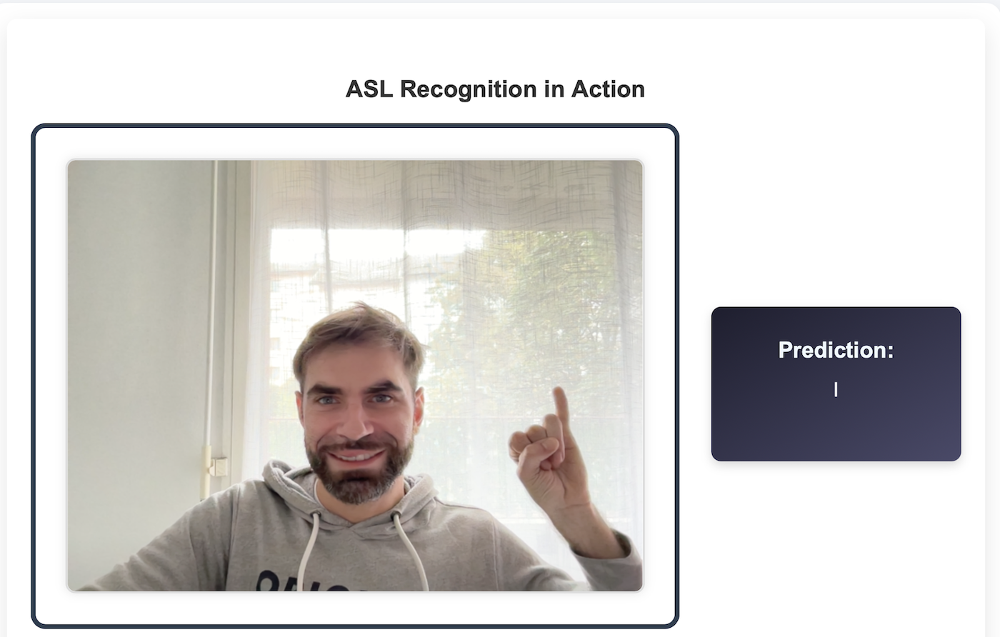

Key Features

Real-time Gesture Recognition
Detects and classifies ASL gestures via webcam instantly.

Interactive UI
User-friendly interface that makes gesture learning accessible.

Comprehensive Feedback
Provides real-time feedback to enhance learning.
About This Project
This project was inspired by my experiences with individuals who rely on sign language for communication. Growing up, I witnessed the challenges they faced, which motivated me to create a tool that facilitates better interaction and understanding. This is a Portfolio Project for Holberton School.